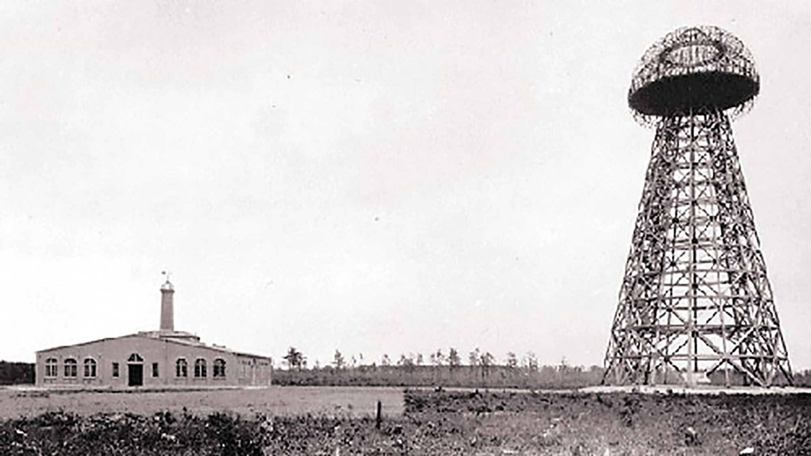

Genius of electricity
Nikola Tesla
Nikola Tesla
Nikola Tesla (Serbian Cyrillic: Никола Тесла; 10 July 1856 – 7 January 1943) was a Serbian American inventor, electrical engineer, mechanical engineer, physicist, and futurist best known for his contributions to the design of the modern alternating current (AC) electricity supply system.

Nikola Tesla
Tesla presented theories on the possibilities of the transmittion by radio waves. Many Tesla's devices and patents were used in the further development of radio.
Nikola Tesla
Tesla experimented with X-rays. He noted the hazards of working with X-ray producing devices.
Nikola Tesla
Tesla conducted high-voltage and high-frequency experiments.